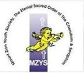
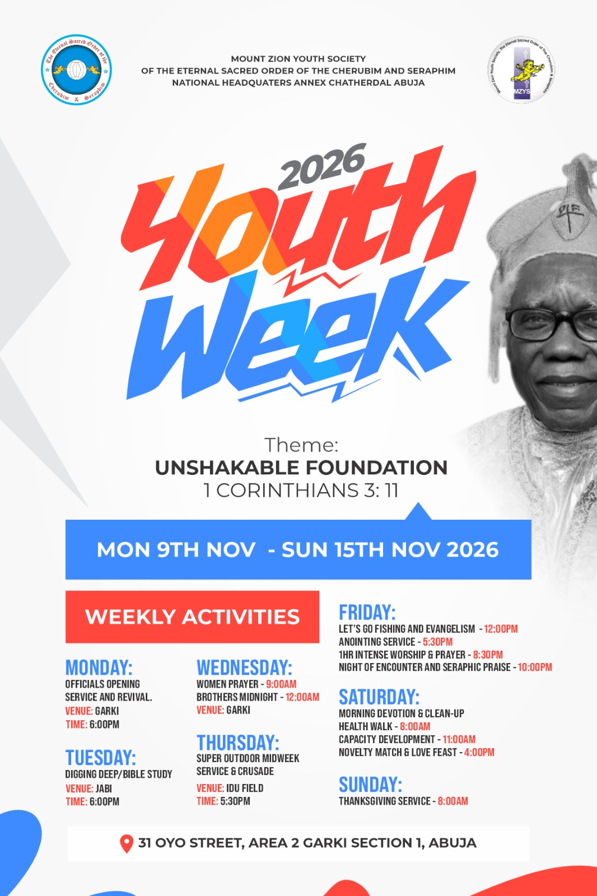

MON09NOVEMBER
BEGIN IN PRAYER
Opening service & revival
- Official opening, prayer, service and revival
Garki · ESOCS National Headquarters Annex

MZYSSomething meaningful is coming. Let this moment be an invitation to pause.
Your invitation is loading. Please stay with us.
One week to deepen your faith, lift your voice and find fellowship. There’s a place for you in every part of it.

Come with an expectant heart.
Bring a friend. Let’s grow together.
Garki · ESOCS National Headquarters Annex
Jabi
Garki · ESOCS National Headquarters Annex
Idu Field · our new Idu branch
Evening services · Garki
Football and picnic venue · contact the committee for details
Updated Saturday times · kickoff 3 p.m. / picnic session 5:30 p.m.Garki · ESOCS National Headquarters Annex
ESOCS National Headquarters Annex
31 Oyo Street, Area 2, Garki, Abuja